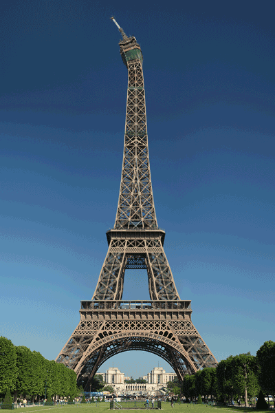

Travel
Yellowstone


Geographical Location: North America
Yellowstone is the first national park in the United States. It covers over 2.2 million acres, and provides an opportunity to see wildlife and explore geothermal areas. In fact, Yellowstone contains about half the world's active geysers.
These unique opportunities also bring out a lot of bad decisions among the tourists. Every year visitors injure themselves or the wildlife by getting close to the animals. You can see examples of people making bad decisions by visiting Yellowstone National Park: Invasion of the Idiots, Tourons of Yellowstone, or Cowboy State Daily.
Photo Gallery


Niagara Falls


Geographical Location: North America
Niagara Falls is a majestic natural wonder situated on the border of the United States and Canada. It consists of three different waterfalls - the American Falls, the Bridal Veil Falls, and the Horseshoe Falls, which is the largest. (generated using umgpt generative ai using prompt 'write a short paragraph about Niagara Falls')
Established in 1885, the falls are a significant source of hydroelectric power, showcasing the perfect balance between natural beauty and utility. They are a top tourist attraction, drawing millions of visitors annually who enjoy activities like boating, hiking, photography, and simply reveling in the awe-striking sight. (generated using umgpt generative ai using prompt 'write a short paragraph about Niagara Falls')
Photo Gallery


Monteverde


Geographical Location: Central America
Monteverde, Costa Rica is situated 4,662 feet above sea level. Monteverde’s famed cloud forests are the byproduct of fog (a thick, low-hanging cloud) tangling amongst the leaves and branches of the forest canopy. Trails and hanging bridges offer a close-up view of the diverse variety of animals and plants living in the forest.
One of the main tourist locations in Monteverde is the town of Santa Elena, which is not only home to a variety of restaurants with delicious food, but a serpentarium as well. You can enjoy hiking, ziplining, and observing the native wildlife while staying in Monteverde. It’s a truly beautiful place.
Photo Gallery


Boulder Colorado


Geographical Location: North America
Boulder, Colorado, is a dynamic city nestled at the foot of the Rocky Mountains in the northern part of Colorado. Renowned for its stunning landscapes and outdoor recreation, Boulder is a haven for nature enthusiasts. (generated using umgpt generative ai using prompt 'write a short paragraph about Boulder Colorado')
The city's vibrant cultural scene offers a rich array of arts, music, and culinary delights, while its prominent institution, the University of Colorado Boulder, contributes to an energetic and youthful atmosphere. Boulder also values sustainability, community engagement, and innovation, which are reflected in its thriving local businesses and startup scene. (generated using umgpt generative ai using prompt 'write a short paragraph about Boulder Colorado')
Photo Gallery


Paris

Geographical Location: Europe
Paris, the capital of France, often referred to as 'The City of Light,' is a globally-renowned epicenter of art, culture, and gastronomy. Known for its enchanting architecture, glamorous fashion industry, and myriad of world-class museums and galleries, it is also home to iconic landmarks like the Eiffel Tower, Notre-Dame Cathedral, and the Louvre Museum where the famous Mona Lisa is displayed. (generated using umgpt generative ai using prompt 'write a short paragraph about Paris')
The city, situated on the Seine River, captivates the hearts of visitors with its romantic aura, exquisite cuisine, espresso-filled cafés, and vibrant night life. Paris is not only a historic and beautiful city, but also a globally influential hub for business and education. (generated using umgpt generative ai using prompt 'write a short paragraph about Paris')
Photo Gallery


Boston


Geographical Location: North America
Boston, the capital city of Massachusetts, is one of the oldest and most culturally rich cities in the United States. It's renowned for its significant role in shaping American history and its contribution to academia, housing world-leading institutions such as Harvard University and Massachusetts Institute of Technology (MIT). (generated using umgpt generative ai using prompt 'write a short paragraph about Boston')
The city offers a wealth of historical landmarks and sites, notably the Freedom Trail, a 2.5-mile path that passes by locations significant to U.S. history. Furthermore, Boston exudes an endearing charm with its iconic parks, delectable cuisine, and successful sports franchises like the Boston Celtics and Boston Red Sox. (generated using umgpt generative ai using prompt 'write a short paragraph about Boston')
Photo Gallery